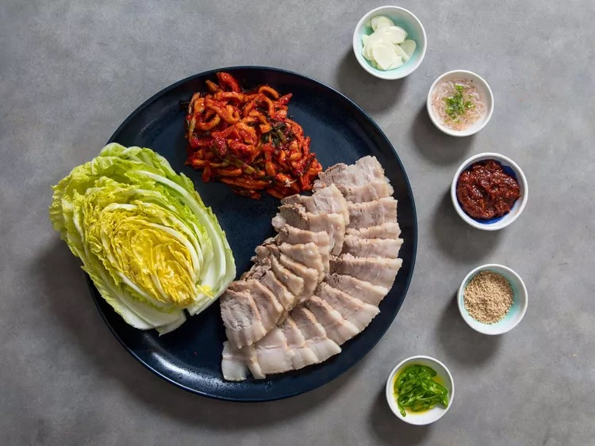

Bossam

Description
Bossam is a pork dish in Korean cuisine.
It usually consists of pork shoulder
that is boiled in spices and thinly
sliced. The meat is served with side
dishes such as spicy radish salad,
sliced raw garlic, ssamjang, saeu-jeot,
kimchi, and ssam vegetables such as
lettuce or cabbage. Bossam is usually
paired with a special sauce made up of a
Korean Gochujang base, sesame oil, miso,
and honey.
Ingredients
For Pork
- Pork (Shoulder Cut): 2
- Lettuce: 1
- Garlic cloves: 4
- Onion: 1
- Green Onion: 4
- Ginger: 1/2
- Black Peppercorn: A couple
- Miso or Korean Doenjang: Few spoons
- Rice Wine: Few spoons
- Rice: Your choice
For Sauce
- Korean Gochujang: 3 spoons
- Miso or Korean Doenjang: 2 spoons
- Green Onions: 1
- Sesame oil: A good amount
- Soy Sauce: A little bit
- Sugar or Honey: A little bit
Steps
For pork
- Cut up the green onions, onions, garlic
- Prepare a pot of water, start heating it up
- Put the pork, green onions, onions, garlic, rice wine, and black
peppercorn into the water.
- Scoop 5 scoops of Miso (depends on how much water you use)
into the water. Make sure the water covers the pork.
- Wait until the water starts to boil, set the fire to medium low and
the timer for one hour.
- After an hour, turn the fire off and let the pork rest in the broth for 15 min.
- Take out the pork and let it rest for another 15 min.
- Cut it and enjoy!
For sauce
- Mix Gochujang and Miso together. Use 3 spoons of Gochujang for every
2 spoons of Miso.
- Cut some more garlic and green onions, put it into the mixture.
- Add sesame oil and honey to taste. Add a little bit of soy sauce.
- Taste the sauce continually until it is to your liking!
- Serve with the pork!